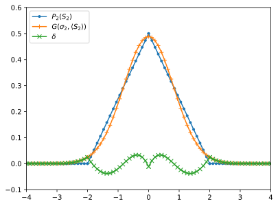
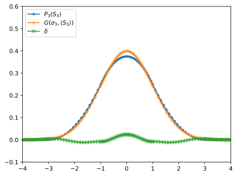

Basic numerics and plot
pylab notebook just like namespace
# For interactive plot, please use
# %pylab notebook
%pylab inline
%pylab is deprecated, use %matplotlib inline and import the required libraries.
Populating the interactive namespace from numpy and matplotlib
#%matplotlib notebook
import numpy as np
import matplotlib as mpl
#mpl.rcParams['figure.dpi']= 150
%config InlineBackend.figure_format = 'svg'
import matplotlib.pyplot as plt
Np=20
##
x1 = np.linspace(-4, -2, Np)
y1 = np.zeros(Np)
##
x2 = np.linspace(-2, 0, Np)
y2 = (2+x2)/4.
##
x3 = np.linspace(0, 2, Np)
y3 = (2-x3)/4.
##
x4 = np.linspace(2, 4, Np)
y4 = np.zeros(Np)
figure()
plot(np.concatenate((x1,x2,x3,x4)),np.concatenate((y1,y2,y3,y4)), label=r'$P_2(S_2)$',marker=".")
sigma=np.sqrt(2/3)
mu=0.0
x=np.concatenate((x1,x2,x3,x4))
plot(x,1/(sigma * np.sqrt(2 * np.pi)) * np.exp( - (x - mu)**2 / (2 * sigma**2)), label=r'$G(\sigma_2,\langle S_2 \rangle)$',marker="+")
plot(x,1/(sigma * np.sqrt(2 * np.pi)) * np.exp( - (x - mu)**2 / (2 * sigma**2))-np.concatenate((y1,y2,y3,y4)), label=r'$\delta$',marker="x")
ylim([-0.1,0.6])
xlim([-4,4])
legend(loc='upper left')
savefig('S_2.pdf')
show()

Np=20
##
x1 = np.linspace(-4, -3, Np)
y1 = np.zeros(Np)
##
x2 = np.linspace(-3, -1, Np)
y2 = ( 2*(3+x2)+((1+x2)**2-4)/2)/8.
##
x3 = np.linspace(-1, 0, Np)
y3 = (3-x3**2)/8.
##
x4 = np.linspace(0, 1, Np)
y4 = (3-x4**2)/8.
##
x5 = np.linspace(1, 3, Np)
y5 = ( 2*(3-x5)+((1-x5)**2-4)/2)/8.
##
x6 = np.linspace(3, 4, Np)
y6 = np.zeros(Np)
figure()
plot(np.concatenate((x1,x2,x3,x4,x5,x6)),np.concatenate((y1,y2,y3,y4,y5,y6)), label=r'$P_3(S_3)$',marker=".")
sigma=np.sqrt(1)
mu=0.0
x=np.concatenate((x1,x2,x3,x4,x5,x6))
plot(x,1/(sigma * np.sqrt(2 * np.pi)) * np.exp( - (x - mu)**2 / (2 * sigma**2)), label=r'$G(\sigma_3,\langle S_3 \rangle)$',marker="+")
plot(x,1/(sigma * np.sqrt(2 * np.pi)) * np.exp( - (x - mu)**2 / (2 * sigma**2))-np.concatenate((y1,y2,y3,y4,y5,y6)), label=r'$\delta$',marker="x")
ylim([-0.1,0.6])
xlim([-4,4])
legend(loc='upper left')
savefig('S_3.pdf')
show()
